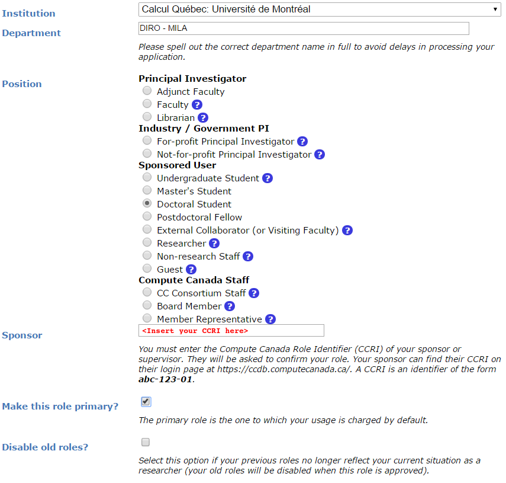

Computational resources outside of Mila
This section seeks to provide insights and information on computational resources outside the Mila cluster itself.
Compute Canada Clusters
The clusters named Beluga, Cedar, Graham, Narval and Niagara are clusters provided by the Compute Canada organisation. For Mila researchers, these clusters are to be used for larger experiments having many jobs, multi-node computation and/or multi-GPU jobs as well as long running jobs.
Current allocation description
Clusters of Compute Canada are shared with researchers across the country. Allocations are given by Compute Canada to selected research groups to ensure to a minimal amount of computational resources throughout the year.
Depending on your affiliation, you will have access to different allocations. If
you are a student at University of Montreal, you can have access to the
rrg-bengioy-ad allocation described below. For students from other
universities, you should ask your advisor to know which allocations you could
have access to.
From Compute Canada’s documentation: An allocation is an amount of resources that a research group can target for use for a period of time, usually a year. To be clear, it is not a maximal amount of resources that can be used simultaneously, it is a weighting factor of the workload manager to balance jobs. For instance, even though we are allocated 400 GPU-years across all clusters, we can use more or less than 400 GPUs simultaneously depending on the history of usage from our group and other groups using the cluster at a given period of time. Please see Compute Canada’s documentation for more information on how allocations and resource scheduling are configured for these installations.
The table below provides information on the allocation for
rrg-bengioy-ad for the period which spans from April 2022 to
April 2023. Note that there are no special allocations for GPUs on
Graham and therefore jobs with GPUs should be submitted with the
account def-bengioy.
Cluster |
CPUs |
GPUs |
||||
# |
account |
Model |
# |
SLURM type specifier |
account |
|
238 |
rrg-bengioy-ad |
V100-16G |
77 |
|
rrg-bengioy-ad |
|
34 |
rrg-bengioy-ad |
V100-32G |
138 |
|
rrg-bengioy-ad |
|
34 |
rrg-bengioy-ad |
various |
– |
– |
def-bengioy |
|
Narval |
34 |
rrg-bengioy-ad |
A100-40G |
185 |
|
rrg-bengioy-ad |
Account Creation
To access the Compute Canada (CC) clusters you have to first create an account at https://ccdb.computecanada.ca. Use a password with at least 8 characters, mixed case letters, digits and special characters. Later you will be asked to create another password with those rules, and it’s really convenient that the two password are the same.
Then, you have to apply for a role at
https://ccdb.computecanada.ca/me/add_role, which basically means telling CC that
you are part of the lab so they know which cluster you can have access to, and
track your usage.
You will be asked for the CCRI (See screenshot below). Please reach out to your sponsor to get the CCRI.
You will need to wait for your sponsor to accept before being able to login to the CC clusters.
Clusters
- Beluga:
(Mila doc) (Compute Canada doc)
For most students, Beluga is the best choice for both CPU and GPU jobs because of larger allocations on this cluster.
- Graham:
(Mila doc) (Compute Canada doc)
Graham has recent T4 GPUs. It can be a good alternative to Beluga with similar characteristics.
- Cedar:
(Mila doc) (Compute Canada doc)
Cedar is a good alternative to Beluga if you absolutely need to have an internet connection on the compute nodes.
- Niagara:
(Mila doc) (Compute Canada doc)
We do not have allocations on Niagara anymore but it remains a good alternative for CPU jobs.
Beluga
Beluga is a cluster located at ÉTS in Montreal. It uses SLURM to schedule jobs. Its full documentation can be found here, and its current status here.
You can access Beluga via ssh:
ssh <user>@beluga.computecanada.ca
Where <user> is the username you created previously (see Account Creation).
Launching Jobs
Users must specify the resource allocation Group Name using the flag
--account=rrg-bengioy-ad. To launch a CPU-only job:
sbatch --time=1:0:0 --account=rrg-bengioy-ad job.sh
Note
The account name will differ based on your affiliation.
To launch a GPU job:
sbatch --time=1:0:0 --account=rrg-bengioy-ad --gres=gpu:1 job.sh
And to get an interactive session, use the salloc command:
salloc --time=1:0:0 --account=rrg-bengioy-ad --gres=gpu:1
The full documentation for jobs launching on Beluga can be found here.
Beluga nodes description
Each GPU node consists of:
40 CPU cores
186 GB RAM
4 GPU NVIDIA V100 (16GB)
Tip
You should ask for max 10 CPU cores and 32 GB of RAM per GPU you are requesting (as explained here), otherwise, your job will count for more than 1 allocation, and will take more time to get scheduled.
Beluga Storage
Storage |
Path |
Usage |
|---|---|---|
|
/home/<user>/ |
|
|
/project/rpp-bengioy |
|
|
/scratch/<user> |
|
|
|
They are roughly listed in order of increasing performance and optimized for different uses:
The
$HOMEfolder on NFS is appropriate for codes and libraries which are small and read once. Do not write experiemental results here!The
$HOME/projectsfolder should only contain compressed raw datasets (processed datasets should go in$SCRATCH). We have a limit on the size and number of file in$HOME/projects, so do not put anything else there. If you add a new dataset there (make sure it is readable by every member of the group usingchgrp -R rpp-bengioy <dataset>).The
$SCRATCHspace can be used for short term storage. It has good performance and large quotas, but is purged regularly (every file that has not been used in the last 3 months gets deleted, but you receive an email before this happens).$SLURM_TMPDIRpoints to the local disk of the node on which a job is running. It should be used to copy the data on the node at the beginning of the job and write intermediate checkpoints. This folder is cleared after each job.
When an experiment is finished, results should be transferred back to Mila servers.
More details on storage can be found here.
Modules
Many software, such as Python or MATLAB are already compiled and available on
Beluga through the module command and its subcommands. Its full
documentation can be found here.
module avail |
Displays all the available modules |
module load <module> |
Loads <module> |
module spider <module> |
Shows specific details about <module> |
In particular, if you with to use Python 3.6 you can simply do:
module load python/3.6
Tip
If you wish to use Python on the cluster, we strongly encourage you to read CC Python Documentation, and in particular the Pytorch and/or Tensorflow pages.
The cluster has many Python packages (or wheels), such already compiled for
the cluster. See here for the
details. In particular, you can browse the packages by doing:
avail_wheels <wheel>
Such wheels can be installed using pip. Moreover, the most efficient way to use modules on the cluster is to build your environnement inside your job. See the script example below.
Script Example
Here is a sbatch script that follows good practices on Beluga:
1#!/bin/bash
2#SBATCH --account=rrg-bengioy-ad # Yoshua pays for your job
3#SBATCH --cpus-per-task=6 # Ask for 6 CPUs
4#SBATCH --gres=gpu:1 # Ask for 1 GPU
5#SBATCH --mem=32G # Ask for 32 GB of RAM
6#SBATCH --time=3:00:00 # The job will run for 3 hours
7#SBATCH -o /scratch/<user>/slurm-%j.out # Write the log in $SCRATCH
8
9# 1. Create your environement locally
10module load python/3.6
11virtualenv --no-download $SLURM_TMPDIR/env
12source $SLURM_TMPDIR/env/bin/activate
13pip install --no-index torch torchvision
14
15# 2. Copy your dataset on the compute node
16# IMPORTANT: Your dataset must be compressed in one single file (zip, hdf5, ...)!!!
17cp $SCRATCH/<dataset.zip> $SLURM_TMPDIR
18
19# 3. Eventually unzip your dataset
20unzip $SLURM_TMPDIR/<dataset.zip> -d $SLURM_TMPDIR
21
22# 4. Launch your job, tell it to save the model in $SLURM_TMPDIR
23# and look for the dataset into $SLURM_TMPDIR
24python main.py --path $SLURM_TMPDIR --data_path $SLURM_TMPDIR
25
26# 5. Copy whatever you want to save on $SCRATCH
27cp $SLURM_TMPDIR/<to_save> $SCRATCH
Using CometML and Wandb
The compute nodes for Beluga don’t have access to the internet, but there is a special module that can be loaded in order to allow training scripts to access some specific servers, which includes the necessary servers for using CometML and Wandb (“Weights and Biases”).
module load httpproxy
More documentation about this can be found here.
Graham
Graham is a cluster located at University of Waterloo. It uses SLURM to schedule jobs. Its full documentation can be found here, and its current status here.
You can access Graham via ssh:
ssh <user>@graham.computecanada.ca
Where <user> is the username you created previously (see Account Creation).
Since its structure is similar to Beluga, please look at the Beluga documentation, as well as relevant parts of the Compute Canada Documentation.
Note
For GPU jobs the ressource allocation Group Name is the same as Beluga, so you should use the flag --account=rrg-bengioy-ad for GPU jobs.
Cedar
Cedar is a cluster located at Simon Fraser University. It uses SLURM to schedule jobs. Its full documentation can be found here, and its current status here.
You can access Cedar via ssh:
ssh <user>@cedar.computecanada.ca
Where <user> is the username you created previously (see Account Creation).
Since its structure is similar to Beluga, please look at the Beluga documentation, as well as relevant parts of the Compute Canada Documentation.
Note
However, we don’t have any CPU priority on Cedar, in this case you can
use --account=def-bengioy for CPU. Thus, it might take some time before
they start.
Niagara
Niagara is a cluster located at University of Toronto. It uses SLURM to schedule jobs. Its full documentation can be found here, and its current status here.
You can access Niagara via ssh:
ssh <user>@niagara.computecanada.ca
Where <user> is the username you created previously (see Account Creation).
Since its structure is similar to Beluga, please look at the Beluga documentation, as well as relevant parts of the Compute Canada Documentation.
FAQ
What to do with ImportError: /lib64/libm.so.6: version GLIBC_2.23 not found?
The structure of the file system is different than a classical Linux, so your code has trouble finding libraries. See how to install binary packages.
Disk quota exceeded error on /project file systems
You have files in /project with the wrong permissions. See how to change
permissions.